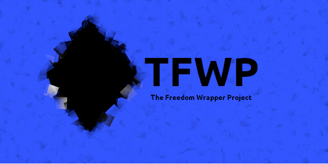
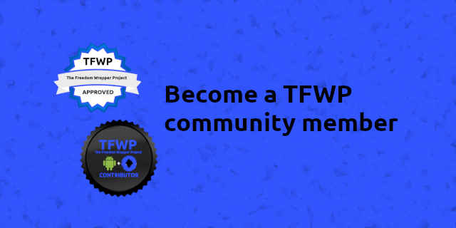

TFWP's stamp of approval is just one step away..
The Bottom Line
The Freedom Wrapper Project (TFWP) is an Open Source and Free Android source code project. It helps beginners and serves to enhance opportunities in entreprenuerialism for all.
What we are is what we do
- A way to get standardized, easy to understand code in the hands of beginners.
- Positive reinforcement for coders of all age groups – make an app in as little as eight steps and start using it right away.
- Take back control: learn to code for yourself and take your content to a larger audience privately or commercially.
- Increase security using simple but effective techniques – check out the project’s readme for more information.
- Open source so you can vet it but free so you can actually use it. No more restrictive licenses.